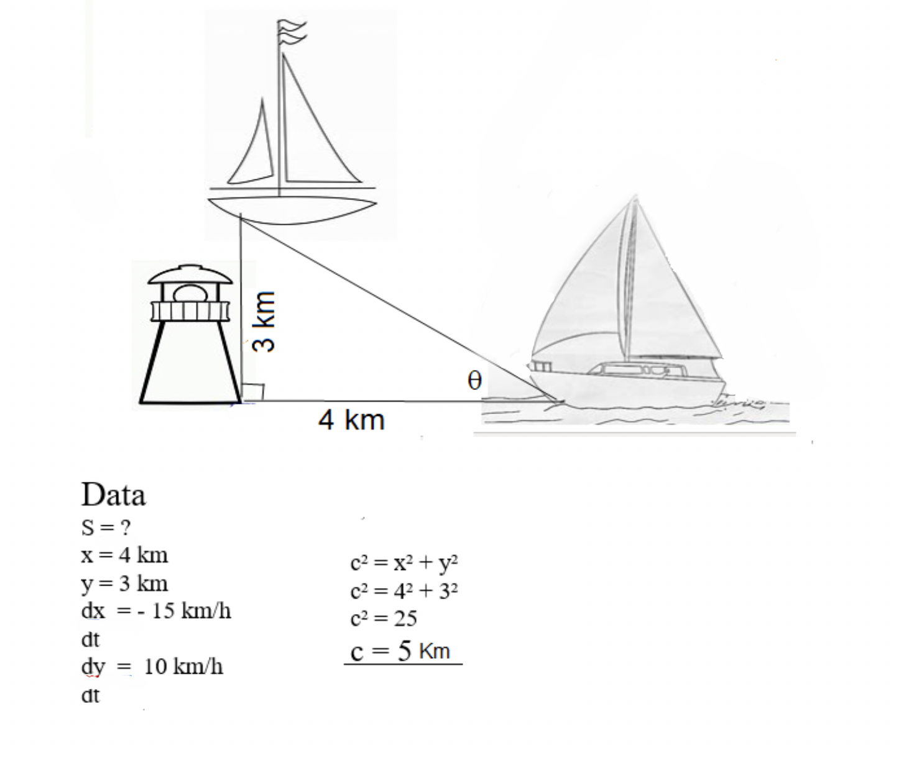

Rate of Change Problems.
1. Ship A is traveling due west toward Lighthouse Rock at a speed of 15 kilometers per hour (km/hr). Ship B is traveling due north away from Lighthouse Rock at a speed of 10 km/hr. Let x be the distance between Ship A and Lighthouse Rock at time t, and let y be the distance between Ship B and the Lighthouse Rock at time t. Let θ be the angle formed between the segment joining Ship A and Ship B and the segment joining Ship A and the Lighthouse Rock.
a) Find the distance between Ship A and Ship B when x = 4 km and y = 3 km.
b) Find the rate of change, in km/h, of the distance between the two ships when x = 4 and y = 3.
5. Two sides of a triangle have lengths 12m and 15m. The angle between them is increasing at a rate of 2 degrees per minute. How fast is the length of the third side increasing when the angle between the sides of fixed length is 60 degrees?
The Falling ladder
How fast is the ladder’s top sliding down the wall when the base is 8 feet from the wall?
| Team |
|---|
| Carlos Hernandez |
| Alex Delatorre |
| Carlos Ponte |